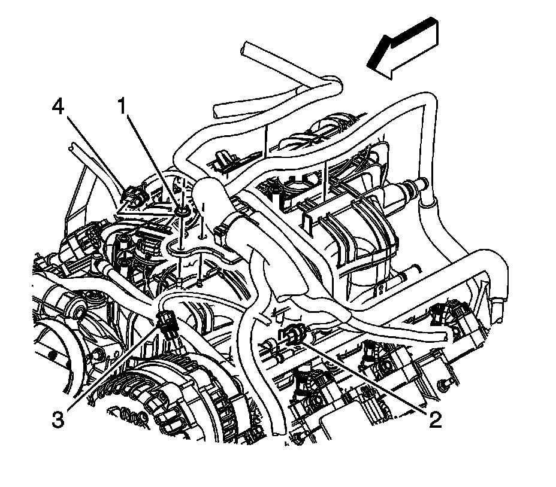

Generator Replacement
GENERATOR REPLACEMENT
REMOVAL PROCEDURE

1. Disconnect the negative battery cable.
2. Remove the intake manifold sight shield.
3. Remove the accessory drive belt.
4. Disconnect the engine harness electrical connector (3) from the generator.

5. Reposition the generator battery jumper cable boot (3).
6. Remove the generator battery jumper cable nut (2) from the generator.
7. Remove the generator battery jumper cable terminal (1) from the generator stud.

8. Remove the generator bolts.
9. Remove the generator.
INSTALLATION PROCEDURE
1. Install the generator.
2. NOTE: Refer to Fastener Notice.
Install the generator bolts.
Tighten the bolts to 55 N.m (41 lb ft).
3. Install the generator battery jumper cable terminal (1) to the generator stud.
4. Install the generator battery jumper cable nut (2) to the generator.
Tighten the nut to 9 N.m (80 lb in).
5. Position the generator battery jumper cable boot (3).
6. Connect the engine harness electrical connector (3) to the generator.
7. Install the accessory drive belt.
8. Install the intake manifold sight shield.
9. Connect the negative battery cable.